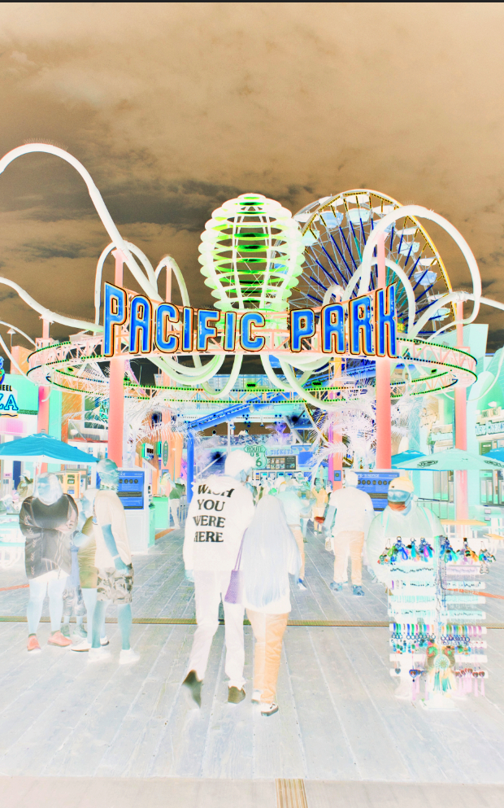
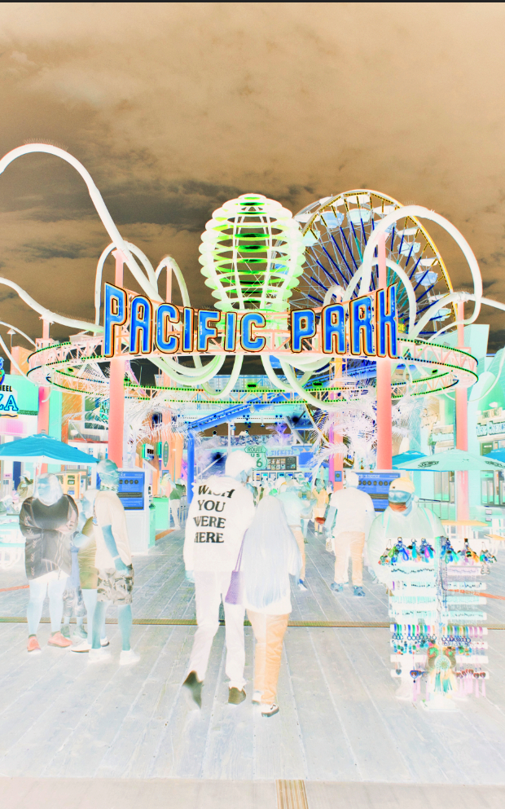

On this page Im sharing my best attempt at photoshoping these pictures to look like glitches. In these pictures they were all taken by my friend. He is a photography major and he took the palm trees and carnival picture in LA by Santa Monica. The other picture has my dad and aunt making birria, which is a mexican dish that has pulled pork in a quesadilla. But I tired my best to emphasize the movement and colors in these pictures.

 
